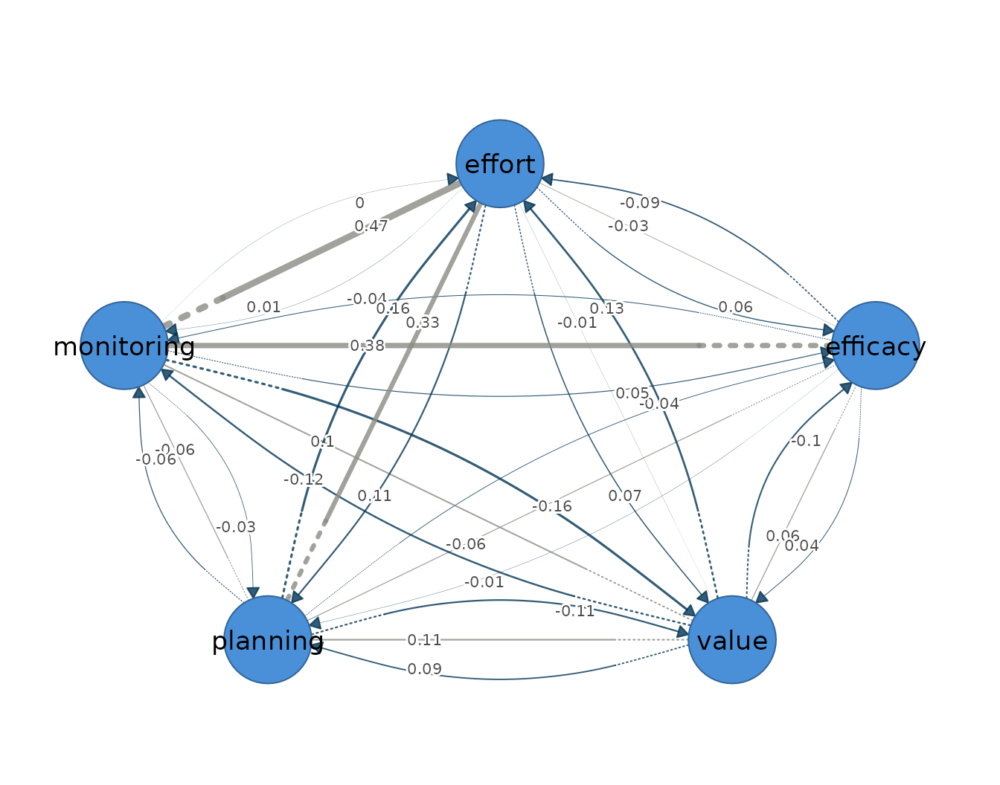

library(idiographic)
data(srl)
vars <- c("efficacy", "value", "planning", "monitoring", "effort")
has_cograph <- requireNamespace("cograph", quietly = TRUE)The first-order vector autoregression, VAR(1), is the reference model for person-specific network estimation from intensive longitudinal data. It models one person’s multivariate series as a first-order Gaussian process, in which each occasion’s measurements depend jointly on the values of all variables one occasion earlier and on the associations that remain among the variables within the same occasion. It is an idiographic model, estimated for a single individual, on the premise that within-person dynamics need not match the between-person structure of the group. It presumes weak stationarity, meaning that the mean, variance, and autocovariance of every series are constant across the observation window; linear, lag-one dynamics; approximately Gaussian fluctuations; and equally spaced measurement occasions.
The model yields two networks over the same variables (Epskamp et al.
2018). The temporal network is directed within-person lag-one
prediction: an edge from -> to states that the value of
from at occasion
predicts the value of to at occasion
within the same person, holding the other lagged variables constant,
which is predictability in the Granger sense (Bringmann et al. 2013). The
self-loop of each variable is its autoregression — the inertia, or
carry-over, of that variable from one occasion to the next. The
contemporaneous network is undirected within-occasion partial
correlation: after the previous occasion has explained what it can, the
part of each variable left unexplained — its innovation — may still be
associated with the innovations of the others, and the contemporaneous
edges are the partial correlations among these remainders, the
within-occasion associations that lagged prediction does not account
for.
fit_var() estimates both networks by ordinary least
squares, one regression per variable, without regularization. Each
equation carries one coefficient per lagged predictor plus an intercept,
so the size of the temporal network grows quadratically in the number of
variables and the sampling variance of the estimates grows with it.
Under a correctly specified linear VAR with exogenous innovations, the
coefficient estimates are unbiased; every cell of both networks receives
a coefficient, and no edge is removed on the estimator’s behalf, which
leaves the analyst to judge which small values are noise. This makes
ordinary VAR the transparent unregularized baseline: the appropriate
estimator when the number of occasions is large relative to the number
of parameters and every estimate is wanted for inspection, and the
reference against which the regularized fit_graphical_var()
trades variance for sparsity by shrinking weak edges to exactly zero
under an extended-BIC penalty. For several people,
fit_var_each() fits a separate ordinary VAR per person and
fit_mlvar() pools information across people through random
effects.
Data and preprocessing
The estimator expects long format: one row per person-occasion, an id
column, and numeric time-varying indicators ordered within person. The
bundled srl data hold self-regulated-learning indicators
for 36 students measured over 156 occasions each; this vignette fits a
single student, Grace, on five indicators: efficacy,
value, planning, monitoring, and
effort. fit_var() standardizes each variable
to unit variance (scale = TRUE), so that coefficients are
comparable across indicators, and centres within person
(center_within = TRUE), so that the intercept absorbs the
person mean; it does not remove trends. Because a violated assumption is
absorbed silently — a trend, for instance, inflates the autoregressive
diagonal rather than producing an error — the stationarity screen
precedes the fit.
preprocess(srl, vars = vars, id = "name")
#> Idiographic Preprocessing
#> Variables: 5 (efficacy, value, planning, monitoring, effort)
#> Ordered rows: 5616
#> Retained pairs: 5548
#> Trend flags: 10
#> High AR flags: 0
#> Drift flags: 1
#> Unit-root risk: 0
#> Zero variance: 0
#> Tables: x$pairs | x$counts | x$diagnostics
#>
#> 10 of 180 subject-series show a trend or unit-root that can bias the temporal network. preprocess() only diagnosed this; to clean just the series that need it, re-run with:
#> preprocess(data = srl, vars = vars, id = "name", detrend = "auto")Across all 36 students the five indicators give 5616 ordered rows, of
which 5548 survive as complete current/lagged pairs. Ten subject-series
trip the linear-trend flag and one a drift flag, while the
high-autoregression, unit-root, and zero-variance screens are clear.
Grace’s own five series are among the clean ones: her 156 ordered
occasions yield 155 complete pairs and trip no flag, so the model is
fitted on her series as they stand. Where a flagged series is to be
modelled, preprocess(..., detrend = ) constructs and
rechecks the transformed lag design. The same transformation must then
be applied to the long data supplied to fit_var();
preprocess() does not mutate the source data. A persistent
trend left in place can masquerade as lag-one structure.
Fitting the model
The estimator takes the data, the variable set, the id column, and
the subject. The subject = argument selects the person
inside the call, so the occasion ordering that the lag-one design
requires is preserved rather than reconstructed by the caller.
var_fit <- fit_var(srl, vars = vars, id = "name", subject = "Grace",
scale = TRUE)
var_fit
#> OLS VAR Result
#> Variables: 5 (efficacy, value, planning, monitoring, effort)
#> Observations: 155
#> Temporal edges: 25 / 25
#> Contemp edges: 10 / 10
#>
#> Temporal [directed]
#> weights [-0.160, 0.159] | +11 / -14 edges
#> efficacy value planning monitoring effort
#> efficacy -0.13 0.04 -0.01 -0.04 -0.09
#> value -0.10 0.10 0.09 -0.12 0.13
#> planning -0.04 -0.11 -0.01 -0.06 0.16
#> monitoring 0.05 -0.16 -0.03 0.00 0.00
#> effort 0.06 0.07 0.11 0.01 -0.02
#>
#> Contemporaneous [undirected]
#> weights [-0.060, 0.467] | +6 / -4 edges
#> efficacy value planning monitoring effort
#> efficacy 0.00 0.06 -0.06 0.38 -0.03
#> value 0.06 0.00 0.11 0.10 -0.01
#> planning -0.06 0.11 0.00 -0.06 0.33
#> monitoring 0.38 0.10 -0.06 0.00 0.47
#> effort -0.03 -0.01 0.33 0.47 0.00
#>
#> plot(x) | plot(x, layer = "temporal")
#> edges(x) | nodes(x) | summary(x) | coefs(x) | matrices(x)The call returns a var_result object whose print method
reports both estimated networks with their weight ranges and signed-edge
counts. Grace contributes 155 usable occasions, the single lost row
being the first occasion, which has no predecessor. All 25 temporal
coefficients and all 10 contemporaneous partial correlations are
estimated — least squares retains every edge — with the temporal weights
confined between −0.160 and 0.159 while the strongest contemporaneous
weight reaches 0.467, a first indication that Grace’s within-occasion
co-regulation is stronger than her lag-one carry-over.
Reading the output
The summary() method reports one row per network layer,
with the edge count, density, mean absolute weight, and the split of
positive and negative edges.
summary(var_fit)
#> network n_nodes n_edges density mean_abs_weight n_positive n_negative
#> 1 temporal 5 20 1 0.07457677 9 11
#> 2 contemporaneous 5 10 1 0.16039547 6 4Both layers are fully dense, as they must be under least squares, so the comparison is carried by the weights: the contemporaneous mean absolute weight of 0.160 is roughly twice the temporal 0.075. Within-occasion association is larger than lagged prediction in this fitted series; no claim of typicality is made from one participant.
The edges() accessor returns one row per edge in
decreasing magnitude; network = selects a layer and
n = keeps the strongest edges. For the temporal layer the
from and to columns read as from
at occasion
predicting to at occasion
.
edges(var_fit, network = "temporal", n = 5)
#> network from to weight
#> 1 temporal monitoring value -0.1604470
#> 2 temporal planning effort 0.1591502
#> 3 temporal value effort 0.1346800
#> 4 temporal value monitoring -0.1204242
#> 5 temporal planning value -0.1098008Grace’s strongest lag-one coefficients are small. Monitoring on one
occasion predicts lower task value on the next (−0.160), and planning
predicts higher subsequent effort regulation (0.159), conditional on the
other lagged variables. These are predictive associations, not evidence
that planning causes effort or monitoring causes a later change in
value. At this magnitude, and with 155 occasions, the individual
temporal coefficients can be high-variance, so the temporal layer is
better read as a pattern than as a set of point claims. Where a sparse,
multiplicity-controlled temporal network is required,
fit_graphical_var() is the estimator of choice.
edges(var_fit, network = "contemporaneous", n = 5)
#> network from to weight
#> 1 contemporaneous monitoring effort 0.46674337
#> 2 contemporaneous efficacy monitoring 0.37844327
#> 3 contemporaneous planning effort 0.33179869
#> 4 contemporaneous value planning 0.10632926
#> 5 contemporaneous value monitoring 0.09825036The contemporaneous layer is where Grace’s process is organized. Monitoring and effort share a partial correlation of 0.467, and monitoring also couples with efficacy (0.378) and planning with effort (0.332). Within a single occasion, monitoring, effort, and efficacy move together after the other indicators are partialled out; these are the same three edges retained when the clean-room vignette applies graphical VAR to Grace, there with shrinkage-biased weights.
Node-level structure follows from nodes(), whose
strength column sums the absolute weights incident to each node within a
layer, split into out- and in-strength for the directed temporal
network, with the self-loop reported separately.
nodes(var_fit)
#> network node strength out_strength in_strength self
#> 1 temporal efficacy 0.4379985 0.1821870 0.2558116 -0.130248472
#> 2 temporal value 0.8318268 0.4468467 0.3849801 0.103987599
#> 3 temporal planning 0.6027558 0.3639382 0.2388176 -0.006545312
#> 4 temporal monitoring 0.4756466 0.2470050 0.2286416 0.004077164
#> 5 temporal effort 0.6348432 0.2515586 0.3832846 -0.024338368
#> 6 contemporaneous efficacy 0.5314378 NA NA 0.000000000
#> 7 contemporaneous value 0.2755102 NA NA 0.000000000
#> 8 contemporaneous planning 0.5548748 NA NA 0.000000000
#> 9 contemporaneous monitoring 1.0030222 NA NA 0.000000000
#> 10 contemporaneous effort 0.8430642 NA NA 0.000000000In the temporal layer value has the highest strength
(0.832), driven by both outgoing and incoming effects; in the
contemporaneous layer monitoring is the hub (1.003),
consistent with its position at the junction of the two strongest
within-occasion edges. The autoregressions are weak throughout — the
largest, for efficacy, is −0.13 — so Grace’s states carry little inertia
from one occasion to the next. The full coefficient tables, including
intercepts and self-loops, are available from
coefs(var_fit), and the underlying matrices — the lagged
coefficient matrix, the residual covariance, and the partial-correlation
matrix derived from it — from matrices(var_fit).
Visualizing the network
Plotting the fit draws both layers side by side: arrows in the temporal panel denote lag-one prediction, edge width scales with absolute weight, and colour encodes sign.
plot(var_fit)
plot(var_fit, layer = "temporal")
The temporal graph is diffuse, matching the narrow weight range: no single lagged driver dominates Grace’s next-occasion state.
plot(var_fit, layer = "contemporaneous")
The contemporaneous graph is concentrated: the thick monitoring–effort edge and its links to efficacy and planning form the within-occasion co-regulation core that the summary statistics quantified. Because the estimates are person-specific, both graphs describe Grace’s process and carry no claim about other students.
The two layers together make a mixed network — directed lag-one
effects and undirected contemporaneous partial correlations — and
plot(var_fit, mixed = TRUE) draws them in one graph, the
temporal edges as curved arrows and the contemporaneous edges as
straight lines.
plot(var_fit, mixed = TRUE)